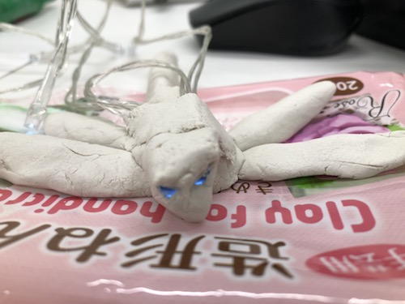
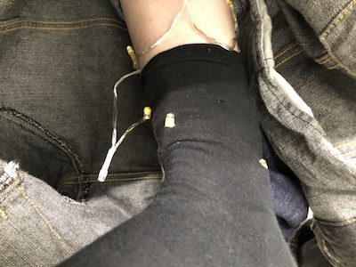

☆ゆるゆるさーきっと☆
自分が撮影した身の回りの光るものをグループで共有し、 wakana ランダム単語ガチャ を使い、そこで出た単語と電気を組み合わせて考えたりもした ”電気×お守り” by Bando Takumi
お守りを題材にした理由としては、お守りは神様のご加護が込められているという、VIDEO VIDEO ”電気×帽子” by Endo Wakana
詳しいことはwakanaのサイト をチェック！
他に作ったものたち ”電気×トンボ”
”電気×靴下”
